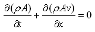
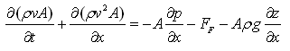
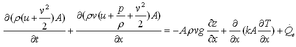
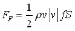
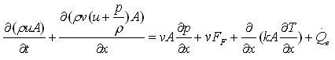

BalanceEquationsBalance equations |
|
Information
This information is part of the Modelica Standard Library maintained by the Modelica Association.
For one-dimensional flow along the coordinate "x", the following partial differential equations hold
| Mass balance |  |
| Momentum balance |  |
| Energy balance 1 |  |
| Pipe friction |  |
| x: independent spatial coordinate (flow is along coordinate x) t: time v(x,t): mean velocity p(x,t): mean pressure T(x,t): mean temperature ρ(x,t): mean density u(x,t): specific internal energy z(x): height over ground A(x): area perpendicular to direction x g: gravity constant f: Fanning friction factor S: circumference |
An alternative energy balance can be derived by multiplying the momentum balance with "v" and subtracting it from the energy balance 1 above. This results in the "energy balance 2":
| Energy balance 2 |  |
This formulation separates the internal energy of the fluid from the kinetic energy of fluid flow. The internal energy is treated by the energy balance 2, the kinetic energy is treated by the momentum balance equally well. The evaluation of medium properties, which are independent of the kinetic energy, and the formulation of many fluid models is simplified with the energy balance 2. The overall conservation of energy is achieved by considering the mutual dependencies of energy and momentum balance.
Some components in the library, like DynamicPipe, provide a rigorous implementation of mass, momentum and energy balance, using the energy balance 2 equation. Other components, like Valves and Fittings, neglect the impact of changes of the kinetic energy and potential energy on the energy balance, because they are usually irrelevant compared to changes due to heat flows. The StaticPipe component neglects the effect of kinetic energy, but includes the potential energy in the balance, which might be substantial.
All modelling assumptions and simplifications are stated in the component documentation; please note that some of the assumptions might be stated in the base classes the component inherits from.